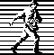

[ Seminars ] [ Seminars on CD ROM ] [ Consulting ]
To be informed of future releases of this document and other
information about object-oriented books, documents, seminars and CDs, subscribe
to my free newsletter. Just send any email to:
join-eckel-oo-programming@earth.lyris.net
________________________________________________________________________
“This book is a tremendous achievement. You owe it to
yourself to have a copy on your shelf. The chapter on iostreams is the most
comprehensive and understandable treatment of that subject I’ve seen to
date.”
“Eckel’s book is the only one to so clearly
explain how to rethink program construction for object orientation. That the
book is also an excellent tutorial on the ins and outs of C++ is an added
bonus.”
“Bruce continues to amaze me with his insight into C++,
and Thinking in C++ is his best collection of ideas yet. If you want
clear answers to difficult questions about C++, buy this outstanding
book.”
“Thinking in C++ patiently and methodically
explores the issues of when and how to use inlines, references, operator
overloading, inheritance and dynamic objects, as well as advanced topics such as
the proper use of templates, exceptions and multiple inheritance. The entire
effort is woven in a fabric that includes Eckel’s own philosophy of object
and program design. A must for every C++ developer’s bookshelf,
Thinking in C++ is the one C++ book you must have if you’re doing
serious development with C++.”
Thinking

© 1999 by Bruce Eckel, MindView,
Inc.
The information in this book is distributed on an
“as is” basis, without warranty. While every precaution has been
taken in the preparation of this book, neither the author nor the publisher
shall have any liability to any person or entitle with respect to any liability,
loss or damage caused or alleged to be caused directly or indirectly by
instructions contained in this book or by the computer software or hardware
products described herein.
All rights reserved. No part of this book may be
reproduced in any form or by any electronic or mechanical means including
information storage and retrieval systems without permission in writing from the
publisher or author, except by a reviewer who may quote brief passages in a
review. Any of the names used in the examples and text of this book are
fictional; any relationship to persons living or dead or to fictional characters
in other works is purely coincidental.
dedication
What’s inside...